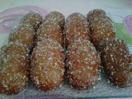

Cape Malay Koeksisters
INGREDIENTS
- 4 cups cake flour
- 2 cups self raising flour
- ⅓ cup sugar
- 2.5ml salt
- 10g (1 packet) instant yeast
- 10 ml fine cardamom
- 10 ml fine cardamom
- 10ml fine ginger
- 10ml fine cinnamon
- 10ml aniseed
- 1 large egg
- 15ml oil
- 30ml butter
- 375ml (1½ cup) hot water
- 375ml (1½ cup) milk
- Oil for deep frying
- Desiccated coconut for sprinkling
- 1 cup sugar
- 1 cup water
- 1 cinnamon stick
- 2 cardamon pods
Syrup
METHOD
Mix flour with spices, sugar, yeast and salt. Melt butter in hot water and mix milk. To dry ingredients add egg, oil and milk-water mixture. Mix thoroughly to form a soft smooth dough. Leave to rise for about 1- 2 hours in a warm place. Once risen, moisten hands with oil and roll dough into a sausage shape and cut into 2cm slices. Set aside to rise again. Lightly stretch slices to form an oval shape and deep fry in medium hot oil until golden brown. Remove with a slotted spoon and drain on a paper towel.
Syrup
Place all the ingredients in a large saucepan and bring to a slow boil, stirring to ensure sugar does not burn. Stir until the sugar syrup becomes slightly sticky. Boil the koeksisters in it for1- 2 minutes, remove with a slotted spoon. Sprinkle with a little of the dessicated coconut and serve hot.
Source: Halaal Recipes